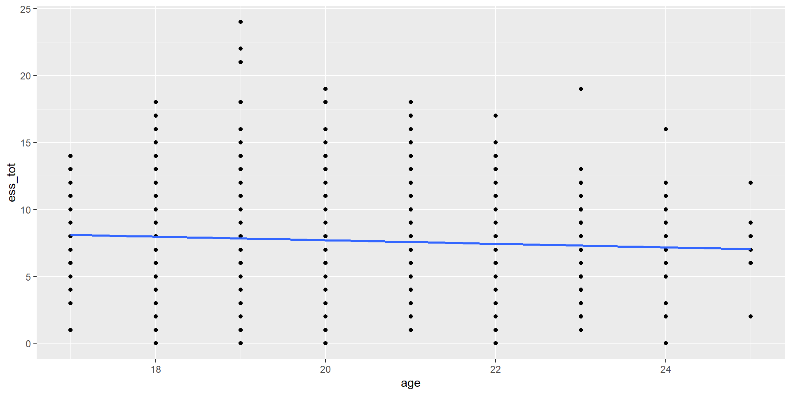
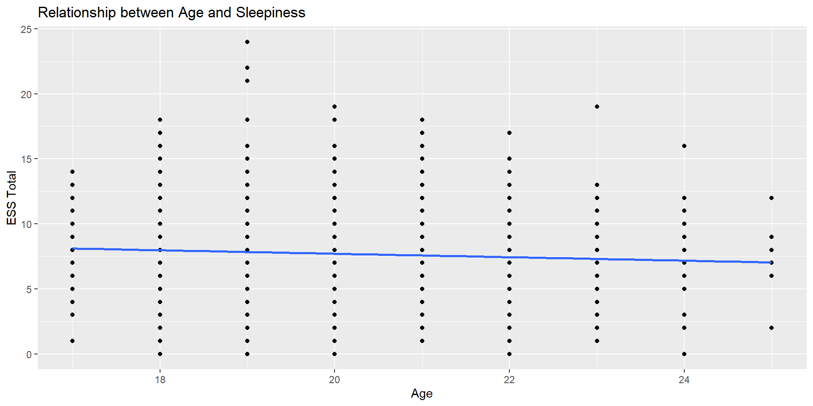

Week 05: Correlation & Effect Sizes
Date: September 22, 2025
Today…
Explore hypotheses, correlations and effect sizes
Today‚Äôs Roadmap üó∫Ô∏è
Explain the counterintuitive logic of Null Hypothesis Significance Testing (NHST)
Define and correctly interpret a p-value
Distinguish what a p-value is from what it is not
Apply the steps of NHST to a research question
The Lady Tasting Tea üçµ
How A Simple Experiment Paved the Way for Modern Experimental Design üìä
Taken from Tweet by Selçuk Korkmaz
Setting:
In 1925, during a summer afternoon on campus, a lady, Dr. Muriel Bristol (who has an algae species named after her), was handed a cup of tea by Ronald Fisher. She declined saying:
“I prefer the flavor when the milk is poured first. I can tell when there is a difference”
Fisher, being a statistician and a white man:
“Prove it”
Note
Sometimes, groundbreaking insights arise from everyday claims!
Designing the Test:
Fisher prepared 8 cups of tea; 4 with milk first & 4 with tea first
Dr. Muriel Bristol correctly identified 3 out of 4 of each! (some reports claim she identified all correctly)
Was it just chance or genuine ability?
Note
Always consider both outcomes. In hypothesis testing, this means setting up null and alternative hypotheses.
Birth of Hypothesis Testing:
Fisher framed it as a combinatorial problem
If it was mere luck/chance, the probability of getting all 8 correct was low
This way of thinking is the groundwork for the concept of the p-value
Important
The p-value gives the probability of observing data (or something more extreme) given that the null hypothesis is true.
NHST
The core idea of Null Hypothesis Significance Testing (NHST) is a bit backward, but powerful:
We can’t prove our research hypothesis is true. Instead, we gather evidence to show that the alternative explanation (the null hypothesis) is incredibly unlikely
It’s a process of elimination and inference
The Tortured Logic of NHST
We create two hypotheses, \(H_0\) and \(H_1\). Usually, we care about \(H_1\), not \(H_0\). In fact, what we really want to know is how likely \(H_1\), given our data.
\[P(H_1|Data)\] Instead, we’re going to test our null hypothesis. Well, not really. We’re going to assume our null hypothesis is true, and test how likely we would be to get these data.
\[P(Data|H_0)\]
NHST Analogy: The Legal System
The Null Hypothesis ( \(H_0\) ) is the starting assumption: “presumed innocent.” In research, this means assuming there is no effect, no relationship, or no difference.
You, the researcher, are the prosecution, gathering evidence (data) to challenge this presumption.
Your p-value reflects the strength of your evidence. A small p-value likely means your evidence is strong.
Rejecting the null is like a “guilty” verdict. You have enough evidence to say the initial presumption of innocence (no effect) is unlikely to be true.
p-value: Formal Definition
This is one of the most important—and misunderstood—concepts in statistics.
The p-value is:
The probability of observing a result as extreme as, or more extreme than, the one we actually observed, assuming the null hypothesis is true.
p-value: Formal Definition
This is one of the most important—and misunderstood—concepts in statistics.
It is NOT:
The probability that the null hypothesis is true
The probability that our research hypothesis is true
A measure of the size or importance of an effect
What are the steps of NHST?
Define null and alternative hypothesis.
Set and justify alpha level (usually \(\alpha\) = .05)
Determine which sampling distribution ( \(z\), \(t\), or \(\chi^2\) for now)
Calculate parameters of your sampling distribution under the null.
- If \(z\), calculate \(\mu\) and \(\sigma_M\)
- Calculate test statistic under the null.
- If \(z\), \(\frac{\bar{X} - \mu}{\sigma_M}\)
- Calculate probability of that test statistic or more extreme under the null, and compare to alpha.
ü߆ Think about‚Ķ
You run a correlational analysis to see if levels of anxiety are related to caffeine consumption. You get a correlation of 0.38 and a p-value of p = .045.
Turn to someone next to you and in your own words, explain what the p-value is telling you.
Looking at the p-value, what can you conclude?
Looking at the p-value, what can’t you conclude?
ü߆More thinking‚Ķ
What if you ran the same study and analyses, but found that your p-value was p = .052?
Visualizations of Concepts
Break ☕
The “How” - Pearson’s Correlation (\(r\))
What is a Correlation?
A statistical expression that quantifies the extent to which two continuous variables are linearly related
Association - Correlation
Will tell us 2 key pieces of information about the relationship:
- Direction (Positive vs. Negative)
- Strength (Magnitude from 0 to 1)
Example: Candy & # of Houses
Research Question: Is there a relationship between the amount of candy we receive on Halloween and the # of houses that we go to?
Variables:
house_n: Number of houses approachedcandy: Amount of candy (# of pieces)
Hypothesis \(H_A\) : There will be a positive correlation. As a trick-or-treater goes to more houses, their amount of candy will increase ( \(r \neq 0\) .
Null Hypothesis \(H_0\): There is no correlation ( \(r = 0\) ).
Step 1: ALWAYS visualize data
Code
set.seed(42)
n <- 200
house_n <- rnorm(n, mean = 10, sd = 2)
candy <- 2 * house_n + rnorm(n, mean = 0, sd = 2)
corr_data <- data.frame(house_n, candy)
corr_data %>%
ggplot(aes(house_n, candy)) +
geom_point(alpha = 0.7, size = 2, color = "purple") +
geom_smooth(method="lm",
se = FALSE,
color = "orange") +
labs(
title = "Relationship Between Num. of Houses and Amount of Candy on Halloween",
x = "Number of Houses",
y = "Amount of Candy"
) +
theme_grey(paper = "black",
ink = "white",)Association - Covariance
Before we talk about correlation, we need to take a look at covariance
\[ cov_{xy} = \frac{\sum(x-\bar{x})(y-\bar{y})}{N-1} \]
Covariance can be thought of as the “average cross product” between two variables
It captures the raw/unstandardized relationship between two variables
Covariance matrix is the basis for many statistical analyses
Covariance to Correlation
The Pearson correlation coefficient \(r\) addresses this by standardizing the covariance
It is done in the same way that we would create a \(z-score\)…by dividing by the standard deviation
\[ r_{xy} = \frac{Cov(x,y)}{sd_x sd_y} \]
Pearson’s \(r\)
Range: Varies from -1 (perfect negative correlation) and +1 (perfect positive correlation)
Assumptions:
Continuous Variables: Both variables are measured on an interval or ratio scale.
Linearity: The relationship between the variables is linear. (This is why you must visualize your data!)
Bivariate Normality: Data points are normally distributed for both variables. (Pearson’s \(r\) is fairly robust to minor violations).
Interpreting Correlations (5.7.5)
| Correlation | Strength | Direction |
|---|---|---|
| -1.0 to -0.9 | Very Strong | Negative |
| -0.9 to -0.7 | Strong | Negative |
| -0.7 to -0.4 | Moderate | Negative |
| -0.4 to -0.2 | Weak | Negative |
| -0.2 to 0 | Negligible | Negative |
| 0 to 0.2 | Negligible | Positive |
| 0.2 to 0.4 | Weak | Positive |
| 0.4 to 0.7 | Moderate | Positive |
| 0.7 to 0.9 | Strong | Positive |
| 0.9 to 1.0 | Very Strong | Positive |
Pearson Correlations in R
Calculating Correlation in R
Now how do we get a correlation value in R?
That will give us the correlation, but we also want to know how to get our p-value
Correlation Test
To get the test of a single pair of variables, we will use the cor.test() function:
Pearson's product-moment correlation
data: corr_data$house_n and corr_data$candy
t = 27.919, df = 198, p-value < 0.00000000000000022
alternative hypothesis: true correlation is not equal to 0
95 percent confidence interval:
0.8609168 0.9180000
sample estimates:
cor
0.8929946 Components of cor.test()
p-value: The probability of getting a correlation this strong if the null were true is virtually zero ( \(p < .001\) ) . We reject the null hypothesis.95 percent confidence interval: We are 95% confident that the true population correlation is between 0.86 and 0.92. Importantly, this interval does not contain 0.We cannot say “There is a 95% chance that the population correlation falls in this range”
CI’s are based on the infinite running of the test (https://rpsychologist.com/d3/ci/)
sample estimates: cor: This is our sample correlation coefficient, \(r = 0.89\). This is our effect size.
The “So What?” - Effect Sizes & Practical Significance
Significance
The \(p-value\) gives us the statistical significance. It will tell us that the effect we identified is likely not to be 0
It does not tell us anything about how large or meaningful the effect actually is. This is where the effect size comes in!
Important
With a large enough sample size, even a tiny, trivial correlation (e.g., r < 0.1) can become statistically significant. Think about what happens to sampling distribution when sample size increases.
Statistical Significance \(\neq\) Practical Significance
Effect Sizes: Correlation
For correlation, we have two related measures of effect size:
Pearson’s \(r\): The correlation coefficient itself. A standardized measure of the strength and direction of the linear association.
Cohen’s Conventions (a rough guide): Small (∣.10∣), Medium (∣.30∣), Large (∣.50∣).
Our finding of \(r = 0.89\) is a large effect.
Coefficient of Determination (\(R^2\)): This is simply r squared. It represents the proportion of variance in one variable that is “explained” or “accounted for” by the other.
Putting it Together
For our candy and housese data:
Our correlation was \(r = 0.89\)
The coefficient of determination is \(R^2 = 0.89^2 = 0.792\)
Interpretation:
“Approximately 79% of the variance in the amount of candy that one gets on Halloween can be accounted for by the number of houses they go to.”
This is a powerful and practical statement about the strength of the association.
Correlations: Using real data
Age x ESS_total: Visualize
Let’s examine the overall correlation between Age and overall sleepiness
First: Visualize
It doesn‚Äôt seem like there is much of a relationship here‚Ķ
Age x ESS_total: Test
Let’s check the overall correlation just to see what we are finding
Pearson's product-moment correlation
data: sleep_data$age and sleep_data$ess_tot
t = -2.2489, df = 1450, p-value = 0.02467
alternative hypothesis: true correlation is not equal to 0
95 percent confidence interval:
-0.110064846 -0.007534546
sample estimates:
cor
-0.05895518 Writing up a Correlation
Template: r(degress of freedom) = the r statistic, p = p value.
Imagine we have conducted a study of 40 students that looked at whether IQ scores and GPA are correlated. We might report the results like this:
IQ and GPA were found to be moderately positively correlated, r(38) = .34, p = .032.
Other example:
Among the students of Hogwarts University, the number of hours playing Fortnite per week and midterm exam results were negatively correlated, r(78) = -.45, p < .001.
And another:
Table 1 reports descriptive statistics and correlations among variables of interest. Knowledge of Weird Al Songs was positively correlated with perceptions of humor for Dr. Haraden (r(49) = .79, p <.001), such that the more Weird Al songs a student knew, the more they thought Dr. Haraden was funny.
Writing up: Example
We have all of the pieces for writing up our correlation between age and sleepiness.
Template: r(degress of freedom) = the r statistic, p = p value.
Among the students in the sample, age was negatively related to overall levels of sleepiness (r(1450) = -0.06, p = .024).
What about our \(R^2\) value?
\(R^2 = -0.06^2 = 0.0034\). Therefore, approximately 0.34% of the variability in the sleepiness scale (ess_tot) is explained by age. Is this meaningful?
Missing Values in Correlation
Handling Missing - Correlation
Listwise Deletion (complete cases)
- Removes participants completely if they are missing a value being compared
- Smaller Sample Sizes
- Doesn’t bias correlation estimate
Pairwise Deletion
- Removes participants for that single pair, but leaves information in when there are complete information
- Larger Sample Sizes
- Could bias estimates if there is a systematic reason things are missing
| age | ESS1 | ESS2 | ESS3 | ESS4 | ESS5 | ESS6 | ESS7 | ESS8 | ess_tot | |
|---|---|---|---|---|---|---|---|---|---|---|
| age | 1.0000000 | -0.0057641 | 0.0039691 | -0.0421214 | -0.1059506 | -0.0871016 | 0.0484763 | 0.0057761 | -0.0206676 | -0.0594733 |
| ESS1 | -0.0057641 | 1.0000000 | 0.3303236 | 0.2784836 | 0.1455593 | 0.2295289 | 0.1422071 | 0.2206383 | 0.0984444 | 0.5981508 |
| ESS2 | 0.0039691 | 0.3303236 | 1.0000000 | 0.1976108 | 0.1387409 | 0.2190331 | 0.1748049 | 0.2134999 | 0.1010883 | 0.5565852 |
| ESS3 | -0.0421214 | 0.2784836 | 0.1976108 | 1.0000000 | 0.2920448 | 0.1948408 | 0.2888370 | 0.2778982 | 0.2178073 | 0.6121220 |
| ESS4 | -0.1059506 | 0.1455593 | 0.1387409 | 0.2920448 | 1.0000000 | 0.2579808 | 0.0897873 | 0.2589136 | 0.2409171 | 0.5936136 |
| ESS5 | -0.0871016 | 0.2295289 | 0.2190331 | 0.1948408 | 0.2579808 | 1.0000000 | 0.0704590 | 0.2821851 | 0.0629151 | 0.5718083 |
| ESS6 | 0.0484763 | 0.1422071 | 0.1748049 | 0.2888370 | 0.0897873 | 0.0704590 | 1.0000000 | 0.2833070 | 0.3493524 | 0.4143559 |
| ESS7 | 0.0057761 | 0.2206383 | 0.2134999 | 0.2778982 | 0.2589136 | 0.2821851 | 0.2833070 | 1.0000000 | 0.2356524 | 0.6088579 |
| ESS8 | -0.0206676 | 0.0984444 | 0.1010883 | 0.2178073 | 0.2409171 | 0.0629151 | 0.3493524 | 0.2356524 | 1.0000000 | 0.4293874 |
| ess_tot | -0.0594733 | 0.5981508 | 0.5565852 | 0.6121220 | 0.5936136 | 0.5718083 | 0.4143559 | 0.6088579 | 0.4293874 | 1.0000000 |
| age | ESS1 | ESS2 | ESS3 | ESS4 | ESS5 | ESS6 | ESS7 | ESS8 | ess_tot | |
|---|---|---|---|---|---|---|---|---|---|---|
| age | 1.0000000 | -0.0057641 | 0.0039691 | -0.0421214 | -0.1059506 | -0.0871016 | 0.0484763 | 0.0057761 | -0.0206676 | -0.0589552 |
| ESS1 | -0.0057641 | 1.0000000 | 0.3303236 | 0.2784836 | 0.1455593 | 0.2295289 | 0.1422071 | 0.2206383 | 0.0984444 | 0.5981508 |
| ESS2 | 0.0039691 | 0.3303236 | 1.0000000 | 0.1976108 | 0.1387409 | 0.2190331 | 0.1748049 | 0.2134999 | 0.1010883 | 0.5565852 |
| ESS3 | -0.0421214 | 0.2784836 | 0.1976108 | 1.0000000 | 0.2920448 | 0.1948408 | 0.2888370 | 0.2778982 | 0.2178073 | 0.6121220 |
| ESS4 | -0.1059506 | 0.1455593 | 0.1387409 | 0.2920448 | 1.0000000 | 0.2579808 | 0.0897873 | 0.2589136 | 0.2409171 | 0.5936136 |
| ESS5 | -0.0871016 | 0.2295289 | 0.2190331 | 0.1948408 | 0.2579808 | 1.0000000 | 0.0704590 | 0.2821851 | 0.0629151 | 0.5718083 |
| ESS6 | 0.0484763 | 0.1422071 | 0.1748049 | 0.2888370 | 0.0897873 | 0.0704590 | 1.0000000 | 0.2833070 | 0.3493524 | 0.4143559 |
| ESS7 | 0.0057761 | 0.2206383 | 0.2134999 | 0.2778982 | 0.2589136 | 0.2821851 | 0.2833070 | 1.0000000 | 0.2356524 | 0.6088579 |
| ESS8 | -0.0206676 | 0.0984444 | 0.1010883 | 0.2178073 | 0.2409171 | 0.0629151 | 0.3493524 | 0.2356524 | 1.0000000 | 0.4293874 |
| ess_tot | -0.0589552 | 0.5981508 | 0.5565852 | 0.6121220 | 0.5936136 | 0.5718083 | 0.4143559 | 0.6088579 | 0.4293874 | 1.0000000 |
Example: Handling Missing Data
Imagine we’ve collected data from 5 students on their levels of anxiety, depression, and sleep quality (where a lower score means better sleep).
Our goal is to run a correlation matrix to see how these three variables relate to each other. But notice, we have some missing data (NA).
| ID | Anxiety | Depression | Sleep Quality |
| 1 | 10 | 12 | 5 |
| 2 | 12 | 14 | 4 |
| 3 | 15 | NA |
3 |
| 4 | 18 | 20 | 2 |
| 5 | 11 | 13 | NA |
Listwise Deletion
The Rule: “All or nothing.” If a participant is missing data on any variable in our list, their entire row is removed from the analysis.
Applying the Rule:
Participant 3 is missing
Depression. They’re out.Participant 5 is missing
Sleep Quality. They’re out.
The Resulting Data for Analysis: This leaves us with only the participants who have complete data on all three variables. We lose 40% of our data
| ID | Anxiety | Depression | Sleep Quality |
| 1 | 10 | 12 | 5 |
| 2 | 12 | 14 | 4 |
| 4 | 18 | 20 | 2 |
Pairwise Deletion
The Rule: “Case by case.” For each individual correlation, we use all participants who have data for that specific pair of variables.
Look at each pair to determine the sample sizes
| ID | Anxiety | Depression | Sleep Quality |
| 1 | 10 | 12 | 5 |
| 2 | 12 | 14 | 4 |
| 3 | 15 | NA |
3 |
| 4 | 18 | 20 | 2 |
| 5 | 11 | 13 | NA |
Summary
| Correlation Pair | N with Listwise Deletion | N with Pairwise Deletion |
| Anxiety & Depression | 3 | 4 |
| Anxiety & Sleep Quality | 3 | 4 |
| Depression & Sleep Quality | 3 | 3 |
Spearman’s Rank Correlation
Spearman’s Rank Correlation
We need to be able to capture this different (ordinal) “relationship”
- If student 1 works more hours than student 2, then we can guarantee that student 1 will get a better grade
Instead of using the amount given by the variables (“hours studied”), we rank the variables based on least (rank = 1) to most (rank = 10)
Then we correlate the rankings with one another
Foundations of Statistics
Who were those white dudes that started this?
Statistics and Eugenics
The concept of the correlation is primarily attributed to Sir Frances Galton
- He was also the founder of the concept of eugenics
The correlation coefficient was developed by his student, Karl Pearson, and adapted into the ANOVA framework by Sir Ronald Fisher
- Both were prominent advocates for the eugenics movement
What do we do with this info?
Never use the correlation or the later techniques developed on it? Of course not.
Acknowledge this history? Certainly.
Understand how the perspectives of Galton, Fisher, Pearson and others shaped our practices? We must! – these are not set in stone, nor are they necessarily the best way to move forward.
Be aware of the assumptions
Statistics are often thought of as being absent of bias…they are just numbers
Statistical significance was a way to avoid talking about nuance or degree.
“Correlation does not imply causation” was a refutation of work demonstrating associations between environment and poverty.
Need to be particularly mindful of our goals as scientists and how they can influence the way we interpret the findings
Fancy Tables
Correlation Tables
Before we used the cor() function to create a correlation matrix of our variables
But what is missing?
| age | ESS1 | ESS2 | ESS3 | ESS4 | ESS5 | ESS6 | ESS7 | ESS8 | ess_tot | |
|---|---|---|---|---|---|---|---|---|---|---|
| age | 1.0000000 | -0.0057641 | 0.0039691 | -0.0421214 | -0.1059506 | -0.0871016 | 0.0484763 | 0.0057761 | -0.0206676 | -0.0594733 |
| ESS1 | -0.0057641 | 1.0000000 | 0.3303236 | 0.2784836 | 0.1455593 | 0.2295289 | 0.1422071 | 0.2206383 | 0.0984444 | 0.5981508 |
| ESS2 | 0.0039691 | 0.3303236 | 1.0000000 | 0.1976108 | 0.1387409 | 0.2190331 | 0.1748049 | 0.2134999 | 0.1010883 | 0.5565852 |
| ESS3 | -0.0421214 | 0.2784836 | 0.1976108 | 1.0000000 | 0.2920448 | 0.1948408 | 0.2888370 | 0.2778982 | 0.2178073 | 0.6121220 |
| ESS4 | -0.1059506 | 0.1455593 | 0.1387409 | 0.2920448 | 1.0000000 | 0.2579808 | 0.0897873 | 0.2589136 | 0.2409171 | 0.5936136 |
| ESS5 | -0.0871016 | 0.2295289 | 0.2190331 | 0.1948408 | 0.2579808 | 1.0000000 | 0.0704590 | 0.2821851 | 0.0629151 | 0.5718083 |
| ESS6 | 0.0484763 | 0.1422071 | 0.1748049 | 0.2888370 | 0.0897873 | 0.0704590 | 1.0000000 | 0.2833070 | 0.3493524 | 0.4143559 |
| ESS7 | 0.0057761 | 0.2206383 | 0.2134999 | 0.2778982 | 0.2589136 | 0.2821851 | 0.2833070 | 1.0000000 | 0.2356524 | 0.6088579 |
| ESS8 | -0.0206676 | 0.0984444 | 0.1010883 | 0.2178073 | 0.2409171 | 0.0629151 | 0.3493524 | 0.2356524 | 1.0000000 | 0.4293874 |
| ess_tot | -0.0594733 | 0.5981508 | 0.5565852 | 0.6121220 | 0.5936136 | 0.5718083 | 0.4143559 | 0.6088579 | 0.4293874 | 1.0000000 |
Correlation Tables - sjPlot
| ESS1 | ESS2 | ESS3 | ESS4 | ESS5 | ESS6 | ESS7 | ESS8 | |
|---|---|---|---|---|---|---|---|---|
| ESS1 | ||||||||
| ESS2 | 0.330*** | |||||||
| ESS3 | 0.278*** | 0.198*** | ||||||
| ESS4 | 0.146*** | 0.139*** | 0.292*** | |||||
| ESS5 | 0.230*** | 0.219*** | 0.195*** | 0.258*** | ||||
| ESS6 | 0.142*** | 0.175*** | 0.289*** | 0.090*** | 0.070** | |||
| ESS7 | 0.221*** | 0.213*** | 0.278*** | 0.259*** | 0.282*** | 0.283*** | ||
| ESS8 | 0.098*** | 0.101*** | 0.218*** | 0.241*** | 0.063* | 0.349*** | 0.236*** | |
| Computed correlation used pearson-method with listwise-deletion. | ||||||||
Correlation Tables - sjPlot
So many different cusomizations for this type of plot
Can add titles, indicate what missingness and method
Saves you a TON of time when putting it into a manuscript
Fancy Visuals
Scatterplot
Before we had a scatterplot that looked like this:
Fancier Scatterplot
Take a look at ggstatsplot https://indrajeetpatil.github.io/ggstatsplot/